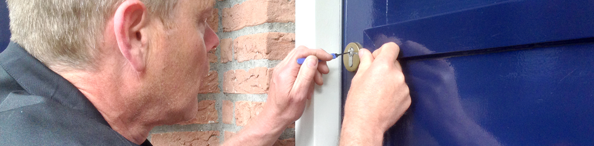

Openen van Sloten
Slot kapot of buitengesloten?

Een slot openmaken
Ik kan uw sloten, ramen en deuren vakkundig en zonder schade openen wanneer u de sleutel bent vergeten. Als een slot niet meer functioneert kan ik deze met zo min mogelijk schade openen. Ik heb al meer dan 12,5 jaar ervaring en ben op de hoogte van de laatste inbraaktechnieken.
Prijzen
Voor voorrijdkosten en het eerste half uur vraag ik in totaal €45,- incl. Daarna vraag ik €45,- incl. per uur.